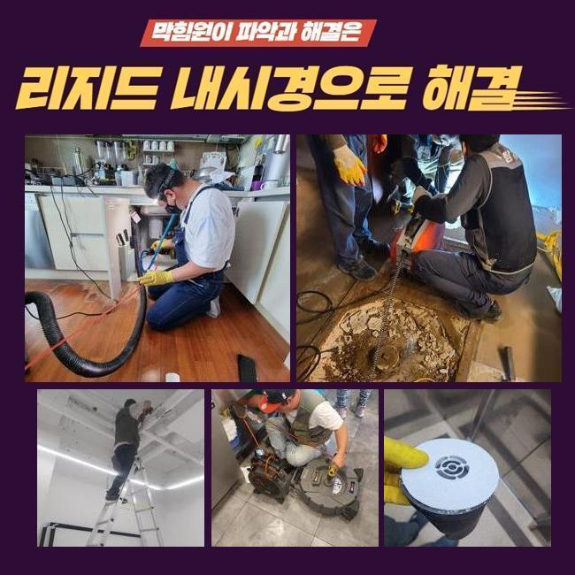
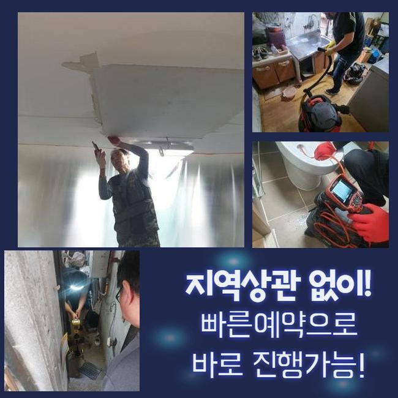
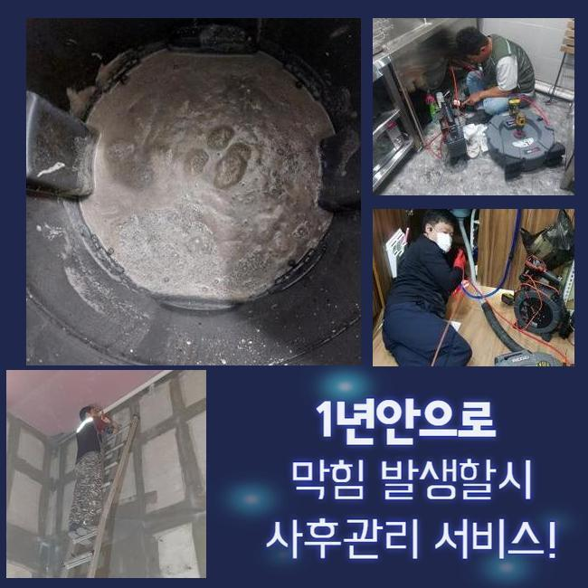
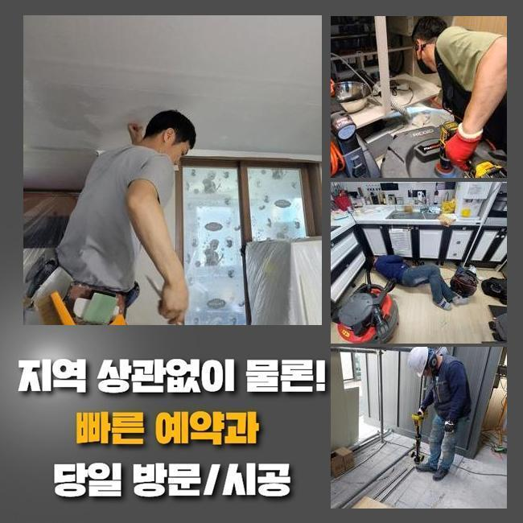
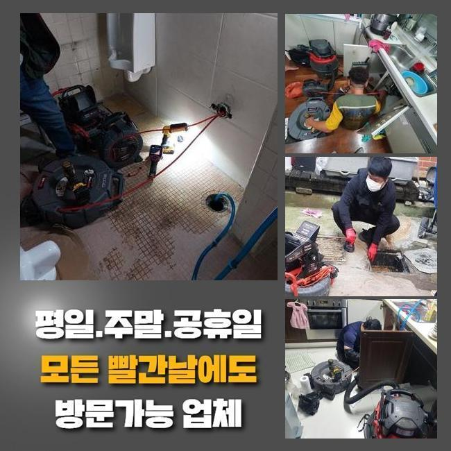
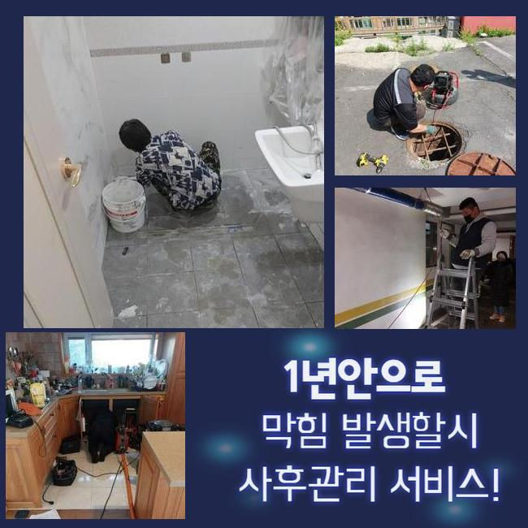

🏠 안양 비산동싱크대역류 관양동 냄새차단 수리업체
안양 싱크대막힘 전문 시공 후기

📋 작업 개요
- 위치: 안양
- 서비스 유형: 싱크대막힘, 변기막힘, 하수구막힘, 배관막힘, 누수수리, 역류해결, 뚫는업체, 배관청소, 고압세척, 배관보수, 악취차단
- 작업 일시: 2025. 4. 4. 22:29
- 업체명: 하수구수사대 (010-5615-2118)
🔍 문제 상황
안양 비산동싱크대역류 관양동 냄새차단 수리업체
하수 방출이 이뤄지지 않는다면 일상 속의 고난을 경험하게 됩니다
일례로 하나의 한 주거공간의 싱크설비가 꽉 차단되어 버려서 계속 물이 차오르는 케이스도 다수이며 욕실의 배수구나 변기 세탁실 아래가 막혀버려서 정상 활용이 힘든 사태까지 벌어지기도 합니다
아파트 현장에서 요청이 들어온다면 세대 내 배관이 막힌 것이니 실내에서 각종 기계들을 가동하여 뚫어냅니다
굵은 메인배관의 경우에는 아파트 건물이라면 결함이 없는지 검토하기 위하여 정례적으로 관로 세척을 하기에 아예 막히는 상황은 상대적으로 적습니다
반대로 상가빌딩은 하수도 마비가생길 가능성도 아파트와 비교해서는 높게 나타납니다
오늘 소개할 곳은 상가건물 내에 깔린 주요배관이 막히는 바람에 건물 안 매장에 있는 싱크대에서 물이 새어나와서 얼른 뭐 때문인지 봐달라고 문의를 넣어주셨습니다
현장 조사에 돌입해보니 주차장 천장 측에 내장된 메인관로의 구조가 발견되어 작업을 개시했습니다
해당 부위에 탈이 나면 집 안에 놓여있는 가지관의 문제라고 추정하는 것 보다는 공용으로 쓰는 배관에 변형이나 마모가 생겼거나 이상 이물질이 차올라서 배수기능이 마비되었을 경우가 더욱 우세합니다

🔎 원인 분석
💡 전문가 진단: 정밀 진단 장비를 사용하여 슬러지의 고착 여부를 판명하고 타격/세척 작업을 실시했습니다.
물이 수렴해서 흘러가는 배수로부터 뚫기 시작하여 완성되면 소규모의 파이프라인까지 세척합니다
고공에 위치한 배관 통로였기에 사다리를 타고 올라가서 고쳐내기로 다짐하고 꽉 막힌 하수도 막힘 해결책이 될 장비를 옮겨두고 작동시켰습니다
위쪽만 관통한다고 해도 내부 깊은 곳은 아직 미처리 되었으므로 공동배관을 다룰 때는 처음부터 끝에 이르기까지 긁어내는 작업을 해줘야 합니다
파이프캡을 열고 충분한 여유공간을 확보하여 조치를 취할 수 있을 법한 작업 환경을 만듭니다
배관 용도로 만들어진 내시경기로 어두워서 잘 보이지 않는 내부 실황을 봐주기로 했습니다
어떤 곳이 오염됐는지 방해 요인이 되었던 대상에 관하여 장비 가동 직전에 평가해야 작업의 방향성을 정할 수 있게 됩니다
메인배관 쪽 오류는 파이프의 사이즈가 대형에 속하기 때문에 일반적인 거주지에 적용하게 되는 소형의 석션장비로는 소용이 없습니다
호스 길이가 아래쪽까지 진입하지 못해서 흡입은 당연히 불가해요
기름기를 갈아내서 뚫어내는 역할을 담당해주는 샤프트기 단시간만에 완료되지 않으며 구멍을 여러개 타공해야 하니 곤란할 것 같았어요

🔧 작업 과정
상가건물 내부의 하수도 통수가 되지 못하면 빠른 세정에 들어가서 안정화를 시켜줘야 합니다
통쾌한 물살을 쏘면서 여러 구간에 확산된 오물들을 속시원히 없어질 수 있게 시공해서 파이프 안을 티끌없는 상태로 조성해야 수시로 봉인되는 일들을 극복할 수 있게 돼요
하수구 안이 풀이라면 말끔한 청소작업이 아무래도 난해할 수 있으므로 처음에는 스프링을 진입시켜서 봉인되어버린 파트를 틈이 나오도록 처리해서 순환이 되도록 조성한 후에 하수구 청결 작업을 시작하는게 낫겠다 싶었습니다
청소지점으로 장비를 내려보내려고 기름기가 빼곡한 지점에 여유를 줄 수 있는 통로를 조성했습니다
지금 소개하는 상가 건물은 여러 개의 식품 영업장들이 운영되고 있었고 기름기도 곳곳에서 잔뜩 배출되고 누적되어서 배수관 속에 기름막이 밀착되어 있는 모습이었습니다
고착화된 유막은 온수로도 녹아나지 않으므로 찌꺼기가 한참 됐다면 석회화가 이뤄져서 돌덩이처럼 견고한 상태가 되어버립니다
제때 하수구 관로 정비를 끝내지 못한 채 나몰라라 한다면 차곡차곡 관로를 메우다가 오염구간이 점차 확장돼서 이동이 불가하도록 꽉 메워져서 통수가 아예 이뤄지지 않게 되어버려요
유분기가 많은 기름기를 조속히 없애는 기법은 고압세척기기이며 분사력 덕분에 걸리는 부분 없이 오물이 붙은 하수구를 세정해 드릴 수 있었습니다
한몸처럼 붙어있던 오물이 물대포의 영향으로 분산되는 모습들을 배관카메라를 동원해서 보며 부족함없이 청소해 나갔습니다
일부 장부는 튕겨져 나오던 거대한 덩어리들이 소멸되기 시작했고 미세한 알갱이만 부유하고 있었습니다
일단 고압세척을 해야한다고 결정나면 대부분의 케이스에는 의심되는 장애요소가 있는 곳들을 전체적으로 정돈해주어야 나중에 다시금 막혀버리는 문제점들이 처리됩니다
오랜기간 머물렀을 기름기를 고압수로 없애버리고 배관 속에 들어가는 카메라로 구석구석을 체크하면서 시공의 질을 테스트했습니다
초반에는 하수가 내려갈 빈 공간이 보이지 않도록 지저분했던 설비시설이었으나 다양하게 뚫어내는 시공을 수행하고나니 더러운 물질이 싹 사라지게 된 상쾌한 관로를 되찾을 수 있었어요
기능까지 되돌려야 하므로 물을 받아서 내려보면서 매끄럽게 물이 방출되는 달라진 모습을 거듭 검사를 거쳐서 보고서 작업 끝을 알렸습니다


✅ 작업 완료
시공장비를 도달시키고자 타공해준 홀들은 보수하는 도구로 꼼꼼하게 덮어서 누수 상황이 벌어지지 않게 조치를 취했습니다
하수시설의 공백으로 많은 곤란함이 있었던 상가 건물 안에 있는 물기가 그대로 머물렀고 역방향으로 고인물이 솟구치는 일까지 빚어졌던 상황을 바로잡고서 작별을 고하게 됐습니다
일반 가정집보다 훨씬 큰 현장은 스스로 처리하기가 힘든 사안이므로 경솔하게 무대포로 작업한다가 수도관이 균열이 가거나 부서지는 사례도 종종 발생합니다
일반 가정집은 물론이고 복잡다단한 상가빌딩이라도 하수관에 대한 이해를 바탕으로 안정적으로 돌려드리고 있으니 믿고 맡겨주시면 감사드리겠습니다!




⚠️ 베란다 누수 및 방수 관리 방법
- ✅ 비가 많이 올 때 창틀 주변이나 아래층 천장에 얼룩이 생기는지 정기적으로 확인해 보세요.
- ✅ 우수관 주변 실리콘 마감이 들뜨거나 깨진 틈새가 있는지 손상 여부를 수시로 체크하세요.
- ✅ 베란다 바닥 타일의 줄눈(메지)이 소실되면 그 틈으로 물이 침투하여 누수가 유발됩니다.
- ✅ 누수 의심 증상 발견 시 방치하면 아래층 손실이 커지므로 즉시 전문가의 진단을 받으십시오.
💡 핵심 정리
- 확실한 장비 작업(내시경 점검 및 샤프트 스케일링)으로 원인을 뿌리 뽑습니다.
- 작업 후 1년 이내에 동일한 부위 재발 시 100% 무상 A/S 서비스를 보장합니다.
- 서울 · 경기 · 인천 전 지역에 24시간 언제든 긴급 출동할 수 있도록 항시 대기 중입니다.
❓ 자주 묻는 질문 (FAQ)
🚨 안양 싱크대막힘 문제로 고민이신가요?
정확한 원인 진단과 확실한 시공으로 재발 없는 해결을 약속드립니다.
24시간 긴급 출동 | 서울 · 경기 · 인천 전지역 | 1년 내 재발 시 무상 A/S